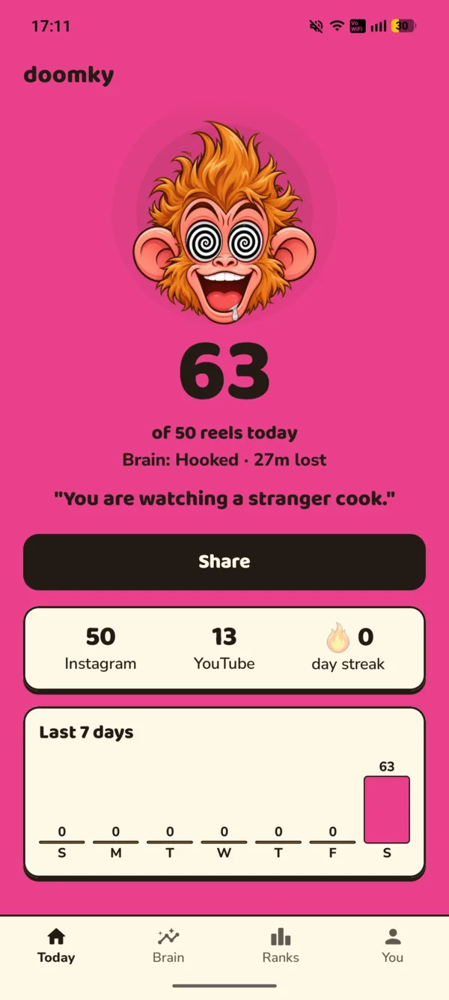
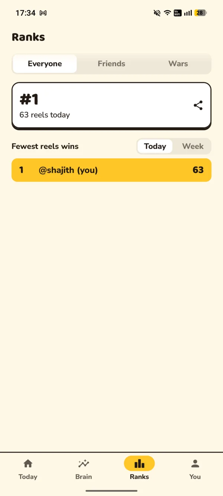
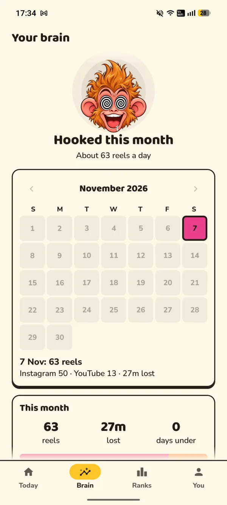

0
Fresh
“Nothing is rotten yet.”

Doomky is a monkey who lives on your phone. Every reel and Short you watch rots him a little more. At your limit, he stops you.
Download for AndroidFree beta. 3.4 MB. Not on iPhone yet.
“Nothing is rotten yet.”
“One more? You said that before.”
“You are watching a stranger cook.”
“You learned a dance. Not your syllabus.”
“Flies are making a reel about you.”
He roasts you in English, Hindi or Telugu, right on top of your reels.

Pick a daily limit. When you hit it, Doomky covers the reel and the sound goes quiet.
Want more? You get one free pass a day. After that it costs bananas you earned, or real money paid to a friend.
Make a promise and there are no extras at all. Quitting takes 24 hours.



Everyone who's logged in, ranked by fewest reels, today and this week. Switch Doomky off and you drop off the board.
Swap codes and you see each other's counts. Doomky tells you when a friend breaks their limit. Start a war for a few days and see who lasts.
Stay under your limit and you earn them. Spend them on five more reels or a streak freeze. You can't buy them or cash them out.
Scan their UPI QR once. Past your limit, one tap opens your own UPI app with everything filled in. You enter your PIN. Doomky never touches the money.
A widget shows today's count and his face, so you see the damage before you open anything.
Your day as a picture for your Status, rotten monkey included.
Only inside Instagram and YouTube, and only which screen is open and when you move to the next reel. It can't read captions, messages or anything you type. The privacy policy has the full list.
If you log in, your name and reel count are on the public board. If you don't, nobody does.
Some phones kill apps to save battery. If Doomky keeps switching off, Settings has a fix for each brand.
Doomky tells you when a new version is ready. Download it here again and install it over the old one. Your counts stay.
Expect rough edges. If something breaks, tell us here or just message the friend who sent you this link.